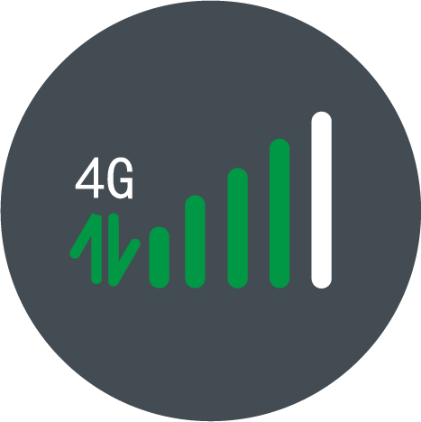
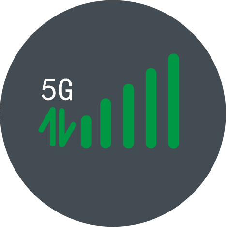
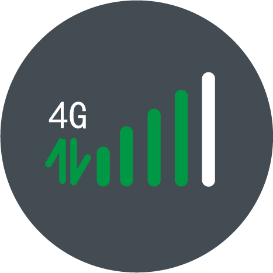
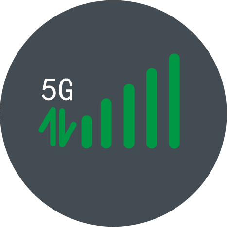

2015-2021年2G到5G基站数量变化
2019年是中国的5G元年，但过去一年通信业发展的一个典型特征是新建4G基站的猛增。
在4G成熟、5G商用的背景下，2G/3G减频退网成为业界重点关注的一个话题，2G/3G基站数量的变化也可以说是这一话题的缩影。 从2015年开始，2G+3G基站占总基站数量的比例开始逐年下滑，2019年这一数字仅有34%。而从绝对数来看，2016年2G+3G基站总数达到296万这一历史峰值，之后开始逐渐减少。过去3年绝对数量减少的速度并不快，但预计在5G商用和用户加速迁移情况下，2G+3G基站总数会迎来快速减少的态势。

 


